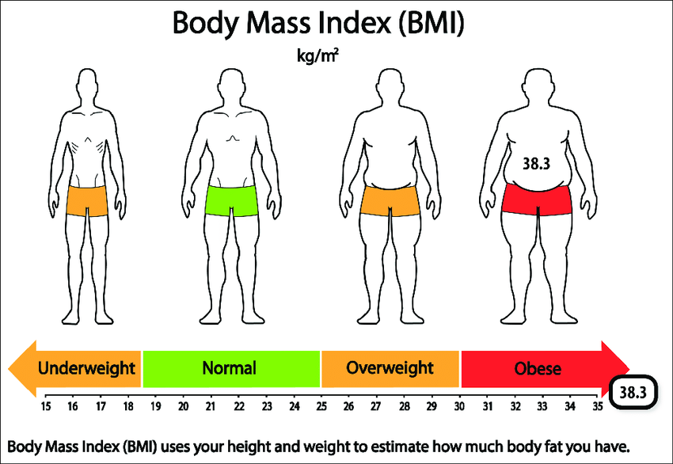

Bine ați venit la BMI Explorer!
Explorați și comparați indicele de masă corporală (BMI) într-un mod interactiv și informativ. BMI Explorer vă permite să accesați și să analizați datele referitoare la BMI folosind datele publice furnizate de Eurostat, prin intermediul propriului nostru API REST/GraphQL.
Caracteristici principale:
- Vizualizare interactivă: Experimentați grafice interactive și instrumente de vizualizare care vă permit să înțelegeți și să explorați diferite aspecte ale BMI.
- Comparare facilă: Comparați nivelurile BMI între țări și în funcție de sex, pentru a identifica tendințe și diferențe semnificative.
- Acces rapid la date: Utilizați API-ul nostru REST/GraphQL pentru a accesa datele brute și a le integra în propriile dvs. aplicații sau analize.
- Actualizări constante: Datele noastre sunt actualizate periodic, asigurându-vă că aveți întotdeauna cele mai recente informații disponibile.
Începeți să explorați acum și să descoperiți insigiențele interesante despre BMI în întreaga Europă și dincolo!
BMI
(apropie cursorul)
